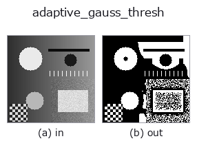

segmentation op• Data kinds: image → region
• Call: fullseye.apply(img, "adaptive_gauss_thresh", a=0.5, b=0.5) (2-D model = एक image + दो scalar knobs a,b∈[0,1])
• HALCON समकक्ष: local_threshold (अर्थ और parameters समझने के लिए HALCON reference उपयोगी है)

*Figure synthetic 128×128 input पर सच में चलाकर मिला output है। बाईं ओर input, दाईं ओर output। Point clouds ऊपर से देखे गए scatter के रूप में (brightness = z), 1-D series line के रूप में, volumes z दिशा में maximum-intensity projection के रूप में, videos बीच के frame के रूप में, complex images amplitude के रूप में, और जो return values चित्र नहीं बन सकते वे स्वयं values के रूप में दिखाए जाते हैं।*
Knob a को बदलकर (0.1 / 0.5 / 0.9, दूसरा knob default पर):
▸ adaptive_gauss_thresh: knob a को बदलने का figure (docs site)
Knob b को बदलकर (0.1 / 0.5 / 0.9, दूसरा knob default पर):
▸ adaptive_gauss_thresh: knob b को बदलने का figure (docs site)
दूसरी images पर भी (synthetic scene / photo / coins। ऊपर की row में inputs, नीचे की row में उनके outputs। Knobs default पर):
▸ adaptive_gauss_thresh: दूसरी images पर output (docs site)
*चौथा column colour (H,W,3) input है। यह op channels को पार किए बिना colour संभालता है (colour channel को तीसरे spatial axis की तरह convolve नहीं करता)।*
Gaussian smoothing किए गए local mean को आधार बनाकर adaptive thresholding। HALCON के local_threshold (Segment an image using local thresholding.) के समकक्ष है।
> नीचे का विस्तृत विवरण मूल text में है — सारांश और headings का अनुवाद हो चुका है।
a が基準を作るガウシアンの σ を 1.0〜4.0 に、b がオフセットを -0.15〜+0.15（(b-0.5)*0.3）に振る。v - gaussian_filter(v, σ) > offset を満たす画素を前景にする。完全に平坦な面は(オフセットが 0 でも)前景にならない —— 差が 1e-9 を超えたときだけ前景とするので、一様な面で平滑化が最下位 1 ビットずれても全面が前景に反転しない。照明ムラがある画像で大域しきい値（_threshold/_otsu）より安定する。近い op に _dyn_threshold があるが、そちらは箱型平均（uniform_filter）を基準にし、オフセット幅も異なる（±0.2）——同じ「適応的しきい値」でも基準の平滑化方式とパラメータ範囲が違う別実装。
Border handling: किनारे के pixel को दोहराकर mirror होता है (d c b a | a b c d, scipy का default reflect) (मापा गया; tools/impl2/border_probe.py)।
खाली frame (मापा गया): एक समान brightness वाली image देने पर brightness चाहे जो हो, परिणाम खाली होता है (सभी pixels background 0)। पूरी सफ़ेद हो या पूरी काली, एक जैसा व्यवहार होता है; केवल brightness से कुछ detect नहीं होता।
• gallery2d_segmentation family guide
• Sample data catalog (DL URL / license) — 2-D के लिए skimage.data (BSD/public) + synthetic, 3-D के लिए real data sources (Stanford/PDS आदि) के DL URL।
• Operators का स्रोत और संदर्भ — इस op family के मूल research/methods के स्रोत।
• Algorithm का मानक स्रोत (लेखक, वर्ष) और उपयोग ऊपर की family usage guide में दिए गए हैं।
नीचे का program सच में चलता है, यह जाँचा गया है (figure वाला ही input)। Studio की help में यह block buttons बन जाता है, जिनसे इसे वहीं load करके चलाया जा सकता है।
adaptive_gauss_thresh 0.50 0.50
▸ यह pipeline load करें · Load करके चलाएँ
• gallery2d_segmentation — py -3.11 examples/gallery2d_segmentation.py
• poc_matrix_code_reading — py -3.11 examples/poc_matrix_code_reading.py
region को input के रूप में लेते हैं)identity · reg_erode · reg_dilate · reg_open · reg_close · fill_holes · select_largest · remove_small
segmentation)threshold · otsu · canny · sk_otsu · sk_li · sk_yen · sk_sauvola · sk_niblack
*Provenance: ops.py — 2D operator registry. यह per-op note tools/opdocs.py md से अपने-आप generate होता है (हाथ से edit न करें)।*
© 2026 Kazufumi Furuse — Fullseye operator documentation. Licensed under Apache-2.0.